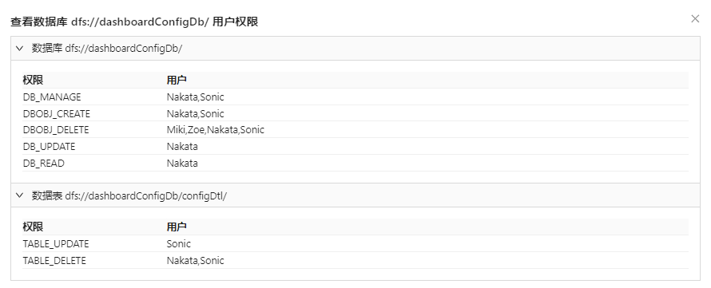

权限管理
在 Web 集群管理界面中，初始管理员（以下简称管理员）可以在控制节点、数据节点和单机节点（亦称为单节点）上完成对用户、用户组的创建、删除、修改及权限设置。

除了常规的用户和组的创建外，管理员还可以为具体的用户和组设置以下应用范围的权限：
- 分布式数据表
- 共享内存表
- 流数据表
- 函数视图
- 全局权限
有关用户和用户组的权限管理方法，见以下各节。
注： 执行以下权限操作之前，请务必确保已经登录管理员账号。DolphinDB 的初始管理员账号名称为 admin，初始密码为
123456。
用户管理
管理员可以为用户设置用户类型（普通用户或管理员）、所属组以及前述的不同应用范围的访问权限。操作方法如下：
如需创建一个用户：
- 点击权限管理>用户管理。
- 点击新建用户。
图 3. 新建用户对话框
- 分别设置用户名、密码、用户类型（是否管理员）和所属组。其中，密码长度必须由 6 到 20 个英文字母、符号或数字构成，且不含空格和中文字符。
- 点击确定。

创建后，管理员可以为用户在不同应用范围下设置访问权限。以设置分布式数据库范围内的用户权限为例，方法如下：
- 在用户管理界面中，选中某一用户名后，点击设置权限。
- 点击分布式数据库
- 点击新增权限。
图 5. 设置用户的分布式数据库使用权限
- 点击 grant 或 deny 以选择权限的大类，即，grant （授予）或 deny （取消）。
- 在 deny 右边的下拉列表中选择具体的权限名称。例如， DB_INSERT, DB_READ, TABLE_WRITE 等等。
- 在预添加按钮左侧的下拉列表中选择前两步设置的权限的作用对象。在本例中，由于权限的应用范围是分布式数据库，因此该下拉列表中可供选择的应用范围是数据库名称。
图 6. 选择权限应用的数据库
- 如需为用户设置多个不同类型的权限或多个作用范围，重复前述 2 - 6
步即可。在确认权限设置无误后，点击确认添加以完成一个用户的权限设置。
图 7. 完成用户权限设置
如需撤销用户的一或多个权限，管理员可以点击用户权限界面下的单个权限右侧操作列的撤销：
亦可选择多个权限后点击批量撤销以撤销所选权限：
如需一次性撤销用户的所有权限，选中界面中类型左侧的复选框后，点击批量撤销。
为用户设置其他应用范围的权限如共享内存表、流数据表、函数视图和全局权限的方法与上述步骤的界面和操作方法相似，故不再赘述。
如需查看用户当前具有的权限，选中用户后点击查看权限：
查看用户权限

此外，在设置了用户权限后，用户权限亦可在交互编程界面的库表浏览器中可见：
- 在交互编程界面，将光标悬浮在现有数据库右侧：
图 11. 交互编程界面中查看用户权限
- 点击
 图标。
图标。图 12. 用户权限

组管理
在用户权限管理中，如果用户很多，管理员通过一对一的用户管理方式意味着极大的管理成本。因此，将用户纳入预先设置好权限的组，通过组权限的策略调整实现对批量用户的权限管理能够极大地缓解前述问题。
建立组和设置组权限的方法如下：
- 点击权限管理>组管理。
- 点击新建组。
图 13. 新建一个组
- 在新建组对话框中，可以从现有的用户列表中选择需要加入该组的成员。注： 选中用户名后，点击 > 箭头可将该用户移出当前组。亦可点击 < 箭头将组外用户移入当前组。
图 14. 选择组成员
- 点击确定以完成组创建。
如需将新的用户添加至已创建的组，
- 点击对应组的操作列的管理成员。
- 选择需要添加入组的用户后点击 < 箭头。
图 15. 添加用户入组
- 点击预览修改。
- 确认无误后点击确定完成组成员修改。
图 16. 确认组成员修改
注： 将组内成员移出组的操作与此相仿，差别在于点击的移动箭头为 >。
如需设置组管理权限，方法如下：
- 点击一个组的设置权限。
- 点击新增权限。注： 设置组权限的方法与设置用户权限的方法相似，可选择应用范围，权限作用对象也与用户管理界面中的可选项相同。
图 17. 添加组权限
如需查看组权限，选中组后点击查看权限：
查看组权限
有关用户权限的详细介绍，参考：用户权限管理。